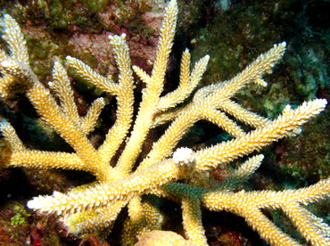

CORAL BIOLOGY
It is the coral, more than anything else that is responsible for bringing in the spectacular diversity of other organisms to the reef.
Removing the coral from the reef is comparable to removing the trees from the rainforest. Most of the wildlife their simply can't support itself without it.
There are Two Types of Coral



Hard Corals
This is the main reason why other animals come to the reef.
Hard corals provide rigid structural support that isn't effectively provided by softer benthic organisms.
They have a 'rocky' calcium carbonate skeleton that encases thousands of fleshy polyps. This skeleton is preserved long after the polyps die.
This means that many generations of corals can build upon the skeletons of previous generations for thousands of years.
Hard corals grow very slowly. This makes them vulnerable to disturbance because damaging a small piece can destroy several decades worth of growth.
There are an estimated 600-800 species of hard corals. Estimates vary depending on sources.
There is some disagreement regarding what counts as separate species and what is merely two sub-members of one species.

Soft Corals
These corals only produce a small amount of calcium carbonate - not enough to produce a rigid skeleton. This means they are flexible and sway with the water movement.
Although they do not provide as much structural support for most animals, they still act as important microhabitat for many and often have effective antibacterial properties that help to keep down the amount of diseases on the reef.
The number of soft coral species is even harder to determine than for hard corals.

Anatomy
Only the outer layer of the coral contains living tissue. The fleshy part of the coral is called a polyp. Each polyp has tentacles that allow the corals to catch food.
The entire coral structure consists of genetically identical polyps, produced asexually from one another.
The polyp absorbs calcium carbonate from the surrounding water and secretes it around itself to provide a hard protective structure.
This structure is called a corallite. The texture of hard corals normally looks like bumpy stones.
Each 'bumb' is a corallite and has an associated polyp living within it. The polyps are connected to one another by connective tissue.
Within this tissue are tubes that allow them to distribute food and other resources equally among themselves.
The polyps also contain stinging cells that are used for defence and for stunning small prey and bringing it towards the 'mouth' of the polyp for consuming.

The Coral Holobiont
A coral structure consists of more than just the coral species itself. It also lives with photosynthetic algae embedded in it’s outer tissue called zooxanthellae (see below), as well as thousands of bacterial cells inhabiting it. These microbes are easy to overlook but are completely essential for the health of the coral as they offer defense against unwanted substances and provide a number of resources for the metabolism of the coral. We can refer to the collective community of the polyps, the zooxanthellae and the resident bacteria as the coral holobiont.
Reproduction
Like ourselves, corals reproduce sexually. This means that the sex cells from two genetically different parent colonies are required to fuse together in order to produce a new colony. Sexual reproduction is important for increasing genetic diversity. The diversity provides the species with more resistance than if all individuals were identical, because it decreases the probability of a disease or other disturbance wiping out all or most of the species, as some individuals will be better suited to endure the disturbance. Corals can be male or female, but the majority are hermaphrodites. Hermaphroditic corals may be both sexes at the same time, or they may be males in their earlier life stage and then eventually become female.
When corals reproduce, the egg and sperm cells are released from the parents at very specific spawning times of the year. The vast majority of corals on a reef spawn on the exact same night, and this is cued by the lunar cycle. This synchronisation increases the chance of compatible sex cells meeting and fertilising in the water. It also means there is a high enough abundance of sex cells in the water that a sufficient amount should survive without being grazed upon by animals.
Once fertilised, a coral larvae will develop as part of the plankton where it may drift for many kilometres. As it drifts, it will start obtaining photosynthetic zooxanthellae from the water. The long drifting journey that coral larvae undertake helps to spread the genes so that they may flourish in suitable areas that are far afield. Eventually the larvae will find a suitable substrate and settle on the seafloor. Once the larvae settles, it will grow into a polyp and start secreting calcium carbonate to stabilise itself. It will then start dividing asexually to produce more polyps, each genetically identical to one another. The colony will build up and will continue to acquire more zooxanthellae and secret more calcium carbonate.

Zooxanthellae
Zooxanthellae are type of dinoflagellate algae in the genus Symbiodinium. They are embedded in the fleshy tissue of the coral. Zooxanthellae are initially taken up by the coral when it is in it's larval stage in the water column but it continues to obtain them throughout it's life via it's feeding mechanisms. The striking colours of corals are provided by the zooxanthellae due to the prigments they possess to absorb various lightwaves. A typical coral obtains most of it's nutrients from its zooxanthellae. These algae produce their own food using energy from the sun. The coral and the zooxanthellae have a symbiotic relationship. This means that they benefit each other. The coral gains carbohydrates from the zooxanthellae, needed to meet their energy demands. The zooxanthellae gain protection from the coral. They can exist freely in the water column but are more likely to be grazed by animals if they do. The zooxanthellae can also make use of some of the metabolic waste products from the coral, e.g. carbon dioxide and ammonium. Scientists group zooxanthellae by clades from A to E. Each clade has slight differences in their properties.

Other Feeding Mechanisms
A typical coral obtains about 80% of its nutrients from the photosynthesis of zooxanthellae. The other 20% comes from consuming other animals. The deeper down a coral lives, the more this percentage increases due to a decrease in sunlight. The polyps have sticky tentacles that can catch plankton and pass them to the mouth of the polyp where they will be ingested. The coral's stinging cells are also used for catching slightly larger prey. They are sensitive to vibrations in the water. When they detect prey swimming by, they trigger a small appendage called a cnidocyte that will fire into the prey and real it in to be ingested. The cnidocyte typically contains neurotoxins that disorientate and immobilize the prey.
Growth Forms
We can group hard corals by growth forms. A variety of growth forms is important on a reef because it creates high structurall complexity and this opens up lots of suitable habitat and shelter for organisms. Many coral species can take on several growth forms depending on the environmental conditions.

Branching
Tree-like shape with branches coming out of a central point and there are secondary branches on these. They are often found in areas of high wave action. This is because they are particularly fast-growing and therefore tend to be the first to recolonize an area after storm damage.

Submassive
Sturdy columns and do not have the secondary branches that branching corals have. They are slower growing than branching corals and are generally found at greater depths as they are slower to recolonize damaged areas.

Massive
Boulder-like structures. They are the slowest growing but also can grow to be the biggest and oldest. Some structures are many hundreds of years old. This is because they have the most sturdy structures and so are the most resistant to mechanical damage. They are often found with small animals living on them. For example, christmas tree worms often drill into their structure.

Encrusting
Flat corals that follow the contours of the reef. Many corals will often take on an encrusting form when they initially colonize. But the base that this provides will act as the foundations for them to expand into another growth form.


Plate
These start out as branching corals but the branches become denser and cause a thick mesh that gives the coral a table-like appearance as the branches radiate out from the central stem.


Foliose
Named for their leaf-like structure and often look like lettuce. Their shape allows them to live in areas that have higher sedimentation than other growth forms can tolerate. Most corals struggle in places of high sedimentation as it will settle on the corals and block out the light and smother the feeding appendages. The shape of foliose corals makes it hard for sediment to settle on.

Mushroom
This growth form is only adopted by one coral family - Fungidae. Unlike other corals, each structure has just one polyp. They are so-called because the skeleton looks like an upturned mushroom. It has ridges that mimic that of a mushroom.